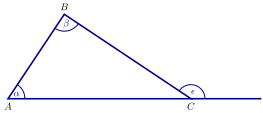

We prove some propositions from Euclid’s Elements.
A full list of the definitions, common notions, postulates, and propositions in Book I is posted on Carmen,
downloaded from http://aleph0.clarku.edu/~djoyce/java/elements/bookI/bookI.html
I.5 In isosceles triangles the angles at the base equal one another, and, if the equal straight lines are produced
further, then the angles under the base equal one another.
I.6 If in a triangle two angles equal one another, then the sides opposite the equal angles also equal one
another.
I.15 If two straight-lines cut one another then they make the vertically opposite angles equal to one
another.
I.16 For any triangle, when one of the sides is produced, the external angle is greater than each of the internal and
opposite angles.

I.27 If a straight-line falling across two straight-lines makes the alternate angles equal to one another then the (two)
straight-lines will be parallel to one another.
I.29 A straight-line falling across parallel straight-lines makes the alternate angles equal to one another, the external
(angle) equal to the internal and opposite (angle), and the (sum of the) internal (angles) on the same side equal to
two right-angles.
I.32 In any triangle, (if) one of the sides (is) produced (then) the external angle is equal to the (sum of the) two
internal and opposite (angles), and the (sum of the) three internal angles of the triangle is equal to two
right-angles.